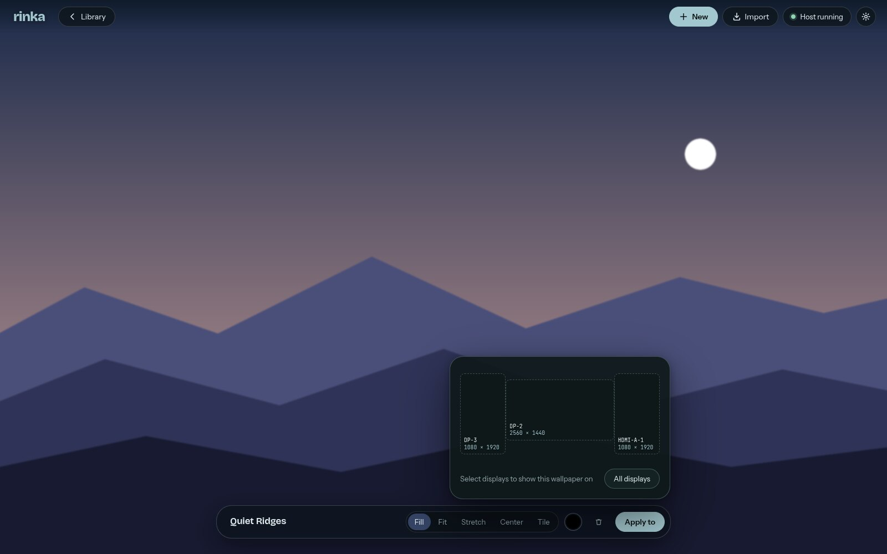
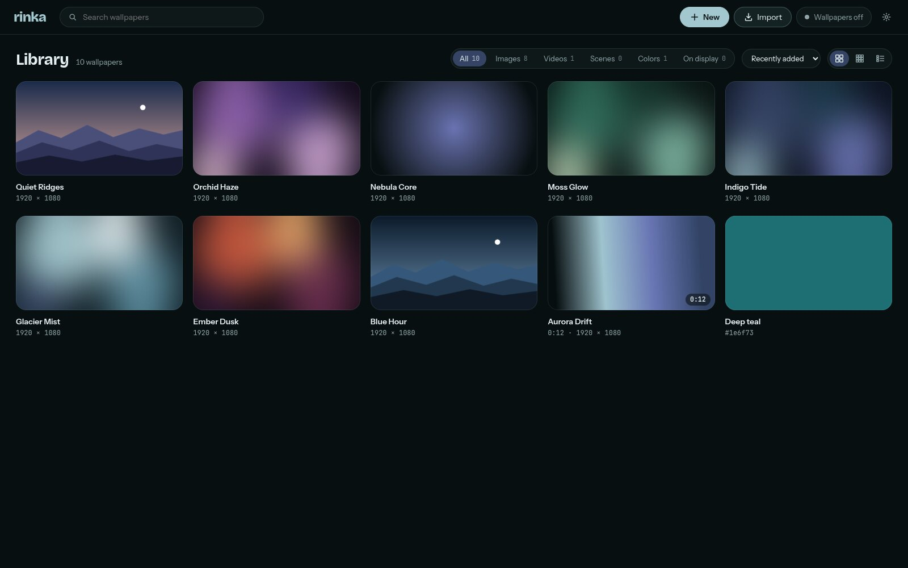

Rinka plays images, videos and Wallpaper Engine scenes behind your windows. The renderer is written once in Rust: it draws your monitors natively, and the editor's preview runs the same code in WebGPU, so the preview shows what the monitors will.

What it plays
- Colors and images
- Fill, fit, stretch, center or tile, per monitor. Rotated and mixed-resolution layouts get buffers at their real size.
- Video
- Decoded with FFmpeg and shown at each frame's timestamp, variable frame rates included. Measured within 1.1 ms of the timestamps.
- Wallpaper Engine scenes
- Converted from your workshop folder into Rinka projects: image layers, transforms and effect shaders translated to WGSL. Each import lists what converted, what is approximate and what is missing, and nothing missing is dropped without asking.
- Many monitors
- Each output gets its own wallpaper, picked on a to-scale map. Wallpapers never take clicks or focus and keep playing when the editor is closed.
Costs nothing when nothing moves
A still wallpaper is drawn once and then left alone; there is no render loop. Animation runs only where something animates, and the tray icon pauses all of it, keeping the current frame on screen. Video stops when the compositor stops showing it; on Windows, a monitor covered by windows stops too.
Colors go through one pipeline on both paths. A test color written as #1e6f73 reads back as rgb(30, 111, 115) from the screen and from the preview.

Status
Rinka is a young personal project. This is what has been measured, not what is hoped for.
| Area | State | Notes |
|---|---|---|
| Niri | works | Colors, images, video and scenes, used daily. |
| Hyprland | untested | Uses the same layer-shell protocol; expected to work. |
| Windows | experimental | Colors, images and scenes behind the desktop icons. No video yet; unsigned installer. |
| Scene import | partial | Of 33 scenes measured, 1 converts fully and 1 partly; 264 of 277 effect shaders translate. |
| Particles | next | Used by 28 of the 33 scenes, so most imports wait on this. |
| Text, sound, scripts | planned | SceneScript, audio-reactive values and text layers. |
| Layer editor | planned | Reorder, hide and adjust layers of a scene with a live preview. |
Measurements behind each line are in the milestone notes.
Install
On Linux, Rinka needs a Wayland compositor with wlr-layer-shell and a GPU with Vulkan. Packages for Fedora and Windows are on the releases page.
Try it
Opens the editor, which starts the wallpaper host. stable is the latest release; leave it off for the development branch.
nix run github:zaroc-dev/rinka/stableKeep it, with Home Manager
The host starts at login and brings back the wallpapers you picked. nix flake update moves you to the next release.
# flake.nix
inputs.rinka.url = "github:zaroc-dev/rinka/stable";
# home.nix
imports = [ inputs.rinka.homeManagerModules.default ];
services.rinka.enable = true;Without Home Manager
Add the package and start the host from your compositor, for example in Niri:
spawn-at-startup "rinka-host" "serve" "--restore"Fedora
Download the .rpm from the latest release. Fedora's own FFmpeg cannot decode H.264 or HEVC; for those videos install ffmpeg-libs from RPM Fusion.
sudo dnf install ./rinka-*.rpm
systemctl --user enable --now rinka-hostWindows
Experimental: colors, images and scenes play, video does not yet. Download Rinka-Setup from the latest release, or the zip to run it without installing. The builds are not signed, so SmartScreen warns before the first start. Current limits are in the Windows notes.